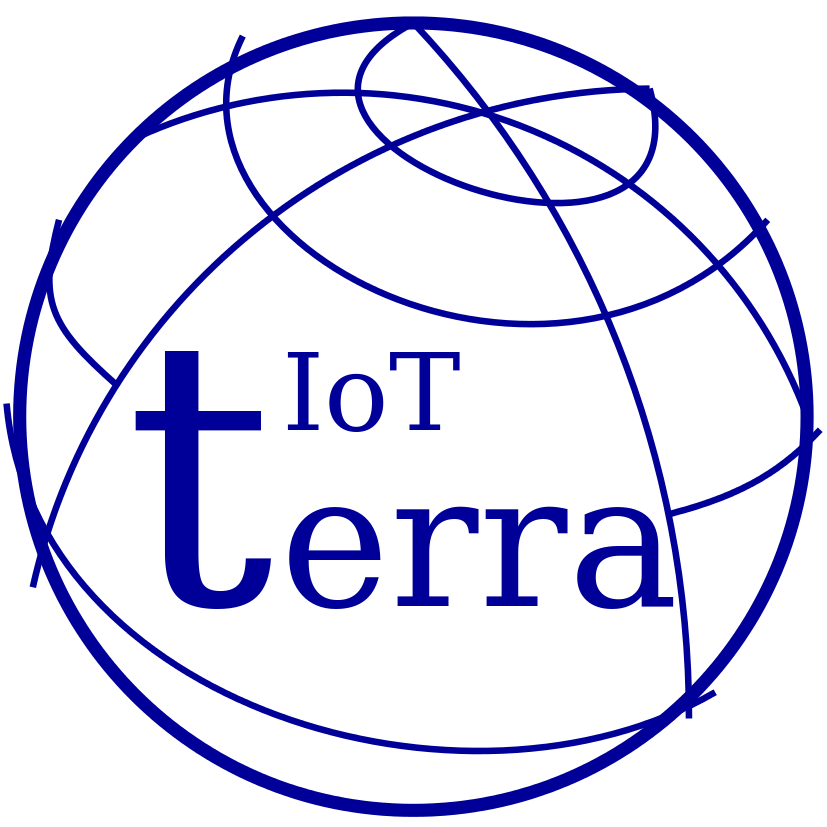

---
---
{% include header.html %}

What is Terra IoT System?
The Terra system implements a high-level programming environment to support development of IoT/WSN systems.
Basically, Terra System is composed by a small virtual machine that is programmed using a reactive scripting
language. A Terra developer can customize the VM interfaces to access hardware specific resources.
Terra was built originally targeting devices based on small micro-controllers and very simple radios,
but actually we have versions running in Linux and Android machines.
The Documentation presents detailed informations about Terra.
Terra IoT System
What is Terra IoT System?
The Terra system implements a high-level programming environment to support development of IoT/WSN systems.
Basically, Terra System is composed by a small virtual machine that is programmed using a reactive scripting
language. A Terra developer can customize the VM interfaces to access hardware specific resources.
Terra was built originally targeting devices based on small micro-controllers and very simple radios,
but actually we have versions running in Linux and Android machines.
The Documentation presents detailed informations about Terra.
Current platforms summary
Summary of current supported platforms and/or operational system.
The menu Platforms presents detailed informations for each platform implementation.
All platforms implement a minimal support that includes the virtual machine engine, radio communication,
and access to a very simples hardware like LEDs or temperature sensors.
The Dev.Status column indicates some additional or special implementation for specific platform.
| Platform Name |
MCU/CPU |
Protocol/Radio |
Dev. Status |
| TinyOS |
8/16bits, 4/8MHz, 4/8/10KB RAM |
IEEE802.15.4 and 900MHz |
LEDs and Temperature Sensor. Optionally a Group Communication library |
| Linux/RPi |
RPi or Linux box |
UDP/WIFI |
|
| Android |
Android devices (> 5.0) |
UDP/WIFI |
Screen - Touch and Color |
| ESP8266 |
32bits, 80MHz, 96KB RAM |
UDP/WIFI |
LED and Temperature Sensor |
| ArduinoMega |
ATmega2560 - 8bits, 16MHz, 8KB RAM |
Proprietary/NRF24L01+ |
LED and Temperature Sensor |